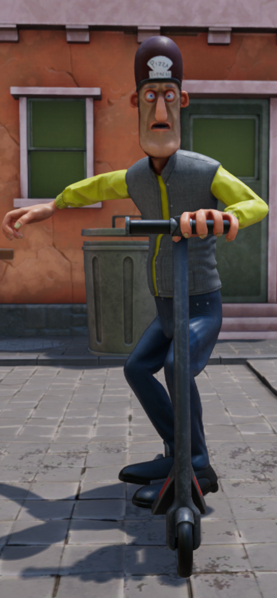

Drunk: Relapsed
Powered by Unreal Engine 4.
The artist for the project is once again Hermanni Penttala.
Drunk: Relapsed is a remake of the original Drunk in celebration for its 4 year anniversary. Released November 2022.
The game is a skill based 3d platformer, where the goal is to avoid obstacles and
make it through the levels.
The difficulty comes from the controls that try to emulate a rolling ball with momentum, where stopping and accelerating are not instant.
The player can collect drinks placed in difficult to reach places and collecting enough drinks will unlock outfits for the player character.
Key features
- Ragdoll system with body part collisions
- Seamless level loading
- Unlockable outfits